Aqua Level Hints
Aqua Level Hints (1 to M of AltverZ 9)
AltverZ 9.1
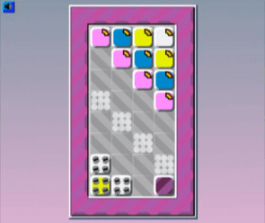
Before the nai
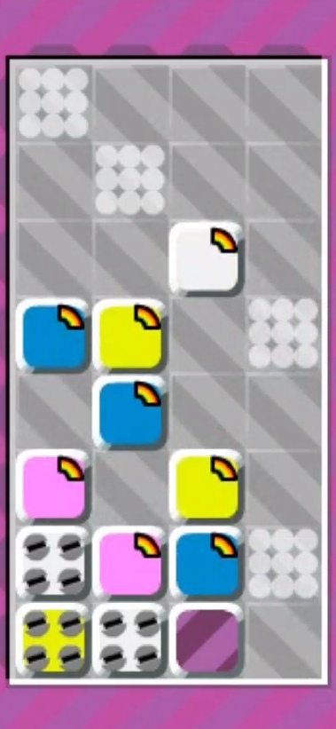
AltverZ 9.2
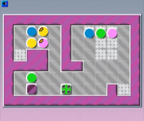
Before the nailed pink block breaks, place one support block to bottom of that vertical line.
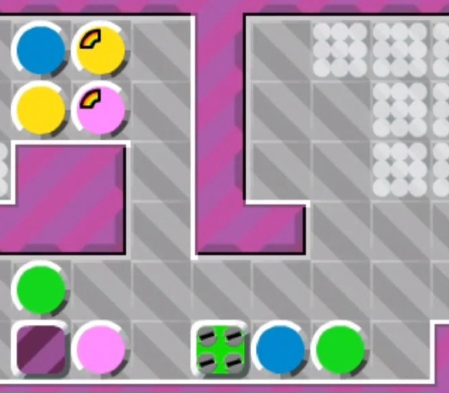
AltverZ 9.3
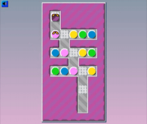
AltverZ 9.4
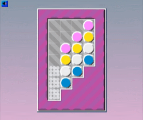
AltverZ 9.5
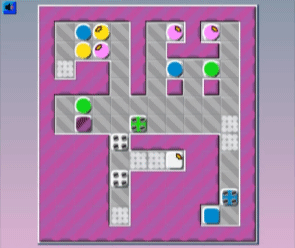
AltverZ 9.6
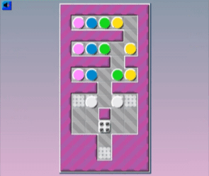
AltverZ 9.7
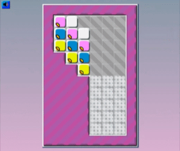
AltverZ 9.8
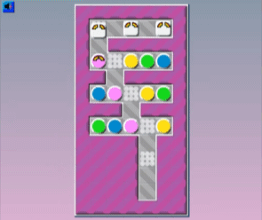
AltverZ 9.9
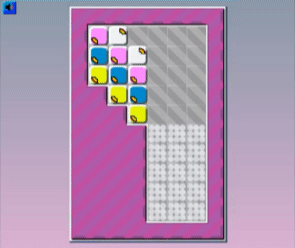
AltverZ 9.M
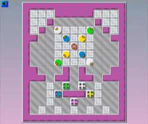